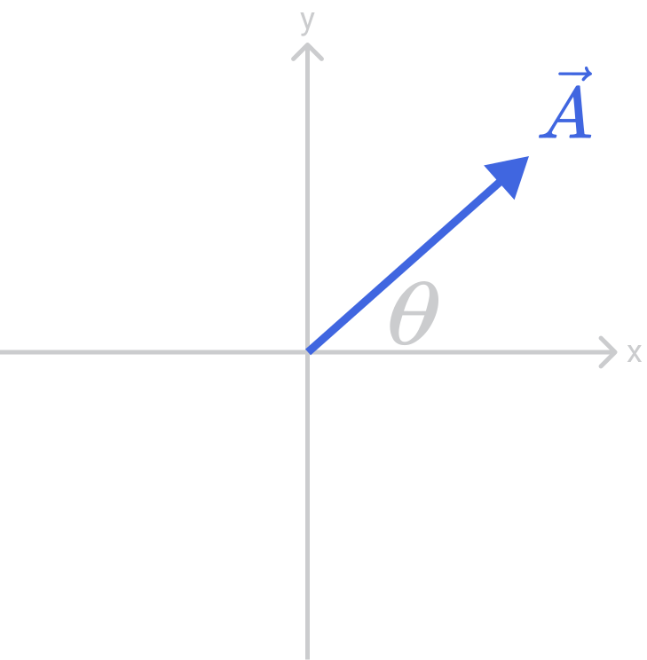

Given that \(|\vec{A}| = {15} \) and \(\theta = {30^{o}} \) what are \(A_x\) and \(A_y\)?

| \(A_x = {13.0} \) \(A_y = {7.5}\) | |
| \(A_x = {13.0}\) \(A_y = {13.0}\) | |

|
\(A_x = {7.5}\) \(A_y = {7.5}\) |
| \(A_x = {7.5}\) \(A_y = {13.0}\) | |
|
|
|